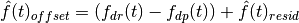
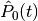
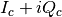
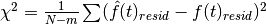
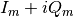
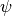
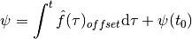
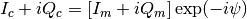

rss_ringoccs.calibration.calibration_class module¶
Purpose:
Class framework for performing the necessary calibration steps for the RSR data. This includes phase correction based on frequency offset of the spacecraft and normalization of received power with respect to the intrinsic spacecraft power.
Notes:
Can be computationally cumbersome, especially for chord occultations. May require up to 30 mins for 16 kHz RSR data files.
Dependencies:
- numpy
- pdb
- scipy
- sys
-
class
rss_ringoccs.calibration.calibration_class.Calibration(rsr_inst, geo_inst, fof_order=9, pnf_order=3, dt_cal=1.0, verbose=False, write_file=True, interact=False, pnf_fittype='poly')¶ Bases:
object- Purpose:
- Define a class which, when instantiated, calls the submodules
for performing each step of the calibration process by
instantiating the classes
FreqOffsetFitin thefreq_offset_fit.pyscript andNormalizationin thepower_normalization.pyscript. - Arguments:
rsr_inst (object): Instance of the RSRReader class geo_inst (object): Instance of the Geometry class - Keyword Arguments:
fof_order (float): Whole number specifying the polynomial order to use when fitting the frequency offset residual. Default is 9. pnf_order (float): whole number specifying the polynomial order to use when fitting the freespace power. Default is 3. dt_cal (float): Desired final spacing in SPM between data points. Default is 1 sec. verbose (bool): If True, print intermediate steps and results. Default is False. write_file (bool): If True, write output CAL .TAB and CAL .LBL files. Default is True. interact (bool): If True, enables the interactive mode in the terminal for fitting the freespace power. Default is False. - Attributes:
rev_info (dict): dict of information identifying the specific occultation: rsrfile, year, day of year, direction and type of occultation, spacecraft revolution number, and observation band t_oet_spm_vals (np.ndarray): SPM values for observed event time 
f_sky_hz_vals (np.ndarray): sum of the predicted sky frequency values and the fit to frequency offset  following Equation 19 in [CRSUG2018]. f_sky_resid_fit_vals (np.ndarray): fit to residual sky frequency 
p_free_vals (np.ndarray): fit to freespace power  IQ_c (np.ndarray): phase-corrected spacecraft signal  history (dict): information about the parameters, results, and computation of the calibration procedures FORFIT_chi_squared (float): sum of the squared residual frequency offset fit such that  FSPFIT_chi_squared (float): 
- Returns:
- Object instance with attributes associated with the process of calibrating the measured signal  as well as the method for phase-correcting .
-
correct_IQ(spm_vals, IQ_m, f_spm, f_offset_fit)¶ Purpose:
Apply frequency offset fit to raw measured signal using the signal frequencies calculated by
FreqOffsetFit. First resamples the frequency offset fit to a 0.1 sec separation. Then, computes detrending function by integrating frequency offset fit to get phase detrending function  using Equation 18 from [CRSUG2018] where
Finally, applies phase detrending correction to signal to raw signal such that

as discussed in [CRSUG2018] (see their Equation 17).
- Arguments:
spm_vals (np.ndarray): raw SPM values IQ_m (np.ndarray): raw complex signal measured by DSN f_spm (np.ndarray): SPM sampled for frequency offset calculation in the calc_freq_offsetclass in thecalc_freq_offset.pyscript.f_offset_fit (np.ndarray): frequency of the spacecraft signal corresponding to f_spm- Returns:
IQ_c (np.ndarray): Frequency-corrected complex signal corresponding to spm_vals